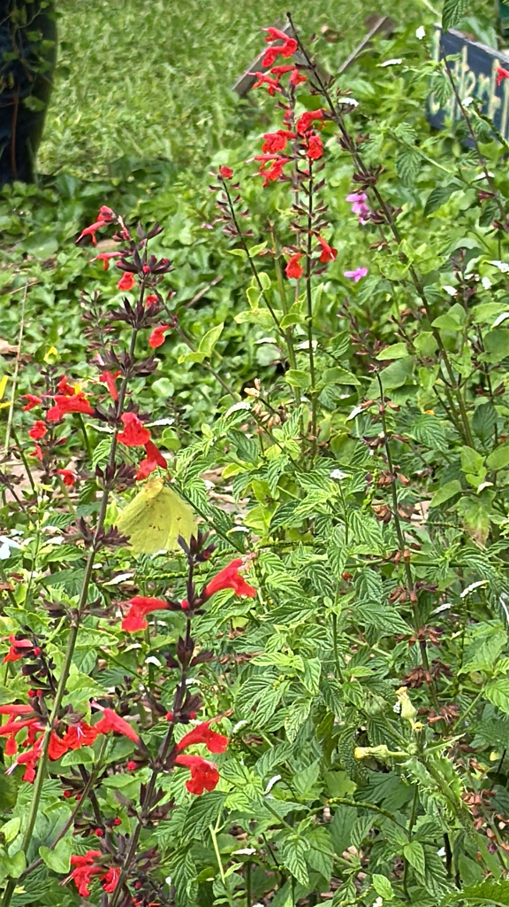

- The cloudless sulphur is a large, clear lemon-yellow butterfly that crosses gardens and open spaces with a quick, restless flight.
- Its very name points to its plant partner: the species name 'sennae' comes from Senna, the group of plants its caterpillars eat.
- It carries an unusually long tongue, letting it sip nectar from deep, tubular flowers — often red ones — that many other butterflies cannot reach.
- Each fall, cloudless sulphurs from farther north stream southward into and through Florida, a quieter migration than the monarch's but a real one.
Large and lemon-yellow; males clear yellow, females yellow to whitish with a dark wing border and a small dark spot.
Among the larger common yellow butterflies.
Fast and somewhat erratic.
A big, bright yellow butterfly moving quickly across open ground or nectaring at tubular flowers. The clear, unmarked yellow of the male is the easiest clue; females are paler with darker edges.
Caterpillars feed on Senna and Cassia plants. Adults nectar at many flowers, favoring long, tubular blooms — especially red ones — that suit their long tongue.
Flitting across open, sunny areas and visiting nectar flowers, especially anywhere Senna or Cassia plants are growing. Most numerous in late summer and fall.
Year-round resident, with a noticeable increase during the fall southward migration.
Just watch and enjoy. Planting native Senna (such as privet senna or partridge pea) gives the caterpillars a home.
- © Cole Guyton (CC-BY-NC), via iNaturalist